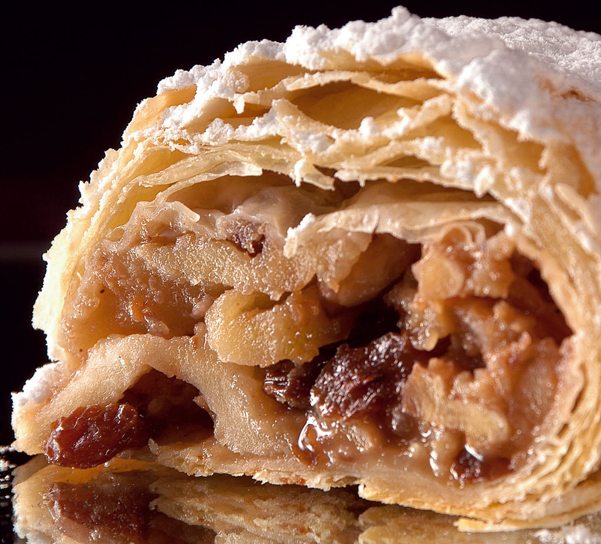

____
Традиционная еда
Штрудель — кондитерское изделие в виде рулета из пресного, тонко раскатанного и вытянутого теста, с различной начинкой (яблочной, грушевой, вишнёвой).

Линцский торт — торт «Линц», миндальный пирог — австрийский торт или пирог с джемом, основу для теста которого составляет рассыпчатая мука и миндальное масло. Характерная особенность пирога — замена верха тонкой решёткой из теста.
Захер (торт) — шоколадный торт, изобретение австрийского кондитера Франца Захера. Торт является типичным десертом венской кухни и вместе с тем одним из самых популярных тортов в мире.
Кайзершмаррн — сладкое мучное блюдо австрийской (в частности венской) кухни. Кайзершмаррн подается как сладкое основное блюдо, а также как горячий десерт, в том числе с ванильным мороженым.
Мавр в рубашке — десерт австрийской кухни в форме маленького гугельхупфа (сладкая выпечка из дрожжевого теста).
____